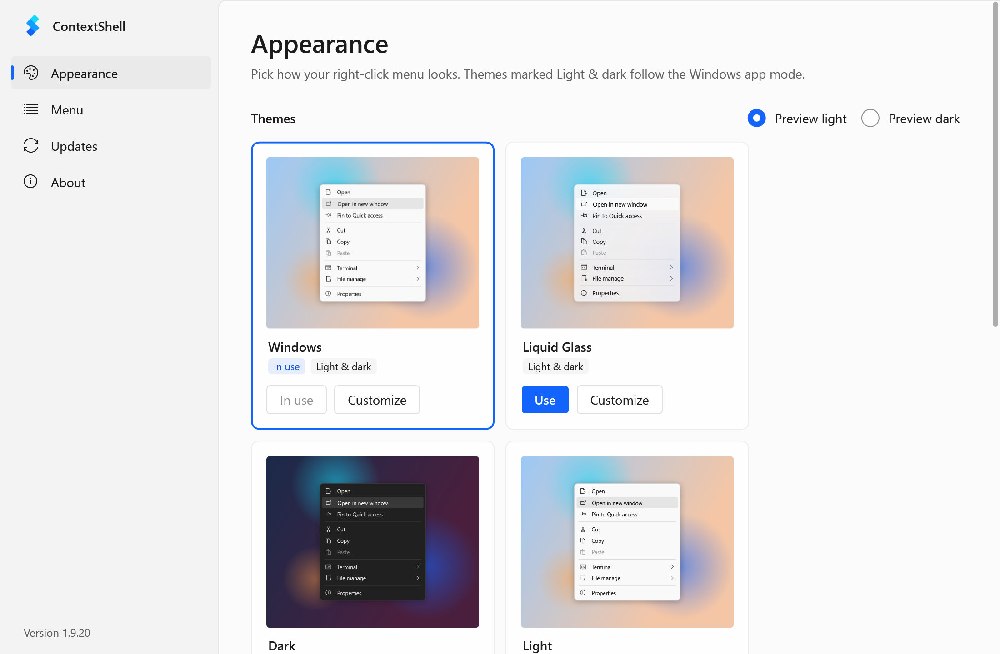

A better right-click menu
for Windows
ContextShell lets you theme, tidy and extend the File Explorer context menu on Windows 10 and 11.
Free, open source, and nothing running in the background.
Windows 10 and 11 · x64, ARM64 and x86 · MIT License

ContextShell Settings: pick a theme, or customize every option with a live preview.
Themes that follow Windows
Pick Windows, Liquid Glass, Dark, Light or Acrylic. Themes switch with Windows light and dark mode automatically.
Edit every option
The theme editor covers every setting, from colors and blur to padding and gradients, with a live preview.
Tidy the clutter
Hide, move or group items Windows and other apps add. Turn whole sections on or off with one switch.
Add your own items
Open terminals here, copy paths, jump to folders, run scripts. Write items in a simple text config.
Light and fast
A small native extension. No services, no tray icon, no ads and no plugin store.
Safe updates
Optional update notices from GitHub Releases. Every download is checked against its SHA-256 checksum.
// Open any folder in a new window, including Quick Access pins
item(type='dir' title='Open in new window'
image= cmd='explorer.exe' args='"@sel.path"')
// A soft, glassy menu that follows Windows light/dark
theme
{
background.color = @if(sys.dark, #1c1c1e, #f5f5f7)
background.opacity = 78
background.effect = 3
}
Ready to try it?
Setup takes a few seconds, and you can remove it any time from Settings > Apps.
Download ContextShell